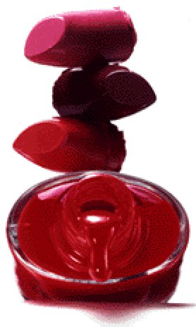

|
cosmetic I drank too much. but I wasn't nearly drunk enough to forget the look in your eyes betraying your words which were betraying me. it forces me to wonder which you it was I met that night. were you finally yourself emboldened by beer? or were you frightened into acting out a tragedy written by anonymous ghosts? I want to silence the thunder that disturbs your sleep. I want to touch your face without make-up. Paul David Mena 9 January, 1997 Cambridge, MA |
 |
back to Paul's Poetry Page